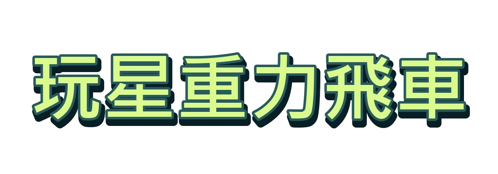
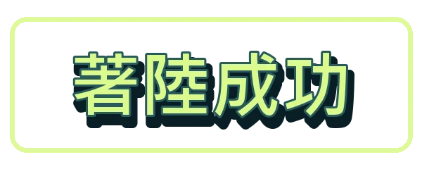

FLIP / GRAVITY TEST DRIVE一台電動車、一面反曲牆。飛越起始點後每公尺 +2 分，安全落地每圈 +100 分。01空白鍵 加速 · X 吸附爬牆02← / → 單側噴射翻正03← + → 同時噴射減緩下降載入圖形資源…V3.0.0
FLIGHT REPORT本次成績 完美著陸 本次總分0分最佳紀錄 0 分 飛行距離0.0 m空中翻轉0.00 圈 飛行距離 越過起始點每公尺 2 分+0翻轉得分 安全落地每圈 100 分+0著陸表現 柔和・水平+0完美姿勢 額外獎勵+0